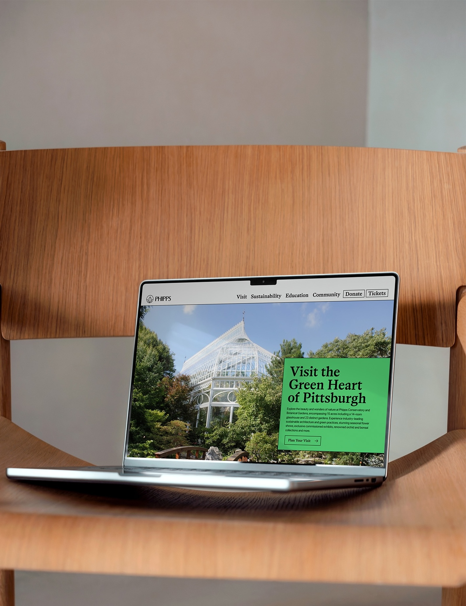
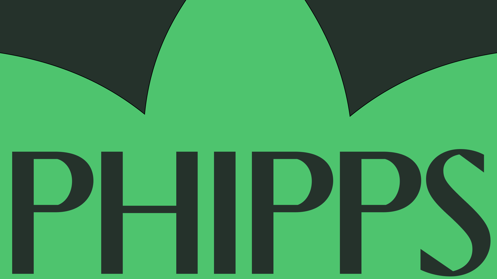

-
Phipps Botanical Gardens
Brand Redesign and Repositioning, Identity, Marketing, Web -
A timeless identity for a botanical garden that honors the past and looks eagerly towards the future.
-
Something old, something new...
The Phipps Conservatory and Botanical Gardens is a fixture in the Pittsburgh community. For nearly two centuries, Phipps has served as an urban oasis, hosting seasonal flower shows and providing respite from the hustle and bustle of industrial Pittsburgh. In the past 15 years, though, Phipps has set their sights on the future. As a leader in sustainability, education, and regional community programs, The Phipps has adopted many new faces beyond their identity as a simple garden. This brand repositioning project breathes new light into the Phipps brand, with a focus on surfacing the diverse offerings the garden provides to the Pittsburgh community.
Impact
● Shifted to a brand with dual identities that support Phipps core, as well as diverse Phipps functionalities
● Aligned visual identity with peer cultural institutions
● Developed a web strategy that aligns core navigation and content structure with principle customer jobs-to-be-done
● Created roadmap for Phipps’ marketing team to appeal to institution leadership for a digital redesign in the future -
Time
Role
Credits -
6 weeks
Sole Designer (Course Project)
Guidance — Justin Edmund, Andrew Twigg
Special Thanks — Joe Reed, Alexa Sinatra
Photography — Unsplash, various -
↳ Phipps Core
At the core of this rebrand is an organization steeped in history and tradition, with a keen eye for modernization. The visual style of Phipps has been elevated with priorities in scalability and flexibility, with three primary typefaces and a palette of cool, contrasting greens and grays.
-

-
↳ Phipps Expanded
The Phipps organization takes on many different, distinct roles in the Pittsburgh community and world at large. As the conservancy has grown, though, these roles have become increasingly microscopic and deteriorating customer recognition. By naming and collapsing different small initiatives and organizations into large, overarching themes of work at Phipps, and by identifying them with a distinct color pattern, this rebrand is able to elevate each focus area into the public's understanding in a fun, approachable, and subtle manner.
-

-

- 
-
↳ Web identity
A visual update to the Phipps site prioritizing clarity and celebration of photography from the gardens, as well as the previously developed Phipps extended color palettes.
-
↳ Web strategy and sitemapping
The Phipps website was possibly the most urgent touchpoint in need of a refresh. Bulky and overflowing, the site struggled from a navigational and organizational standpoint to accomodate an ever-growing archive of information which in turn created confusion among customers trying to accomplish simple tasks like buying tickets and planning their visit. By conducting a comprehensive site audit and rooting the web redesign in a update to site architecture strategy, the new Phipps site is not only visually stunning and on-par with peer organizations, but also aligned with core customer needs.
Above is an example of the types of strategies I proposed when meeting with Phipps leadership. By consolidating navigational sections to minimal, easy to understand labels, site visitors are able to navigate towards their desired paths much more easily. -
〝 Caleb’s work was a true gift to Phipps Conservatory. On a short timeline, he was able to thoroughly assess the structure of our website, propose thoughtful changes to bring the most customer-demanded resources to the forefront, and find novel opportunities to bring mission-centered messaging and experience-deepening connections to the user flow. His work inspires us to prioritize a redesign in the near future by giving a vivid glimpse of the potential and possibilities. 〞
— Joe Reed, Phipps Marketing Director
